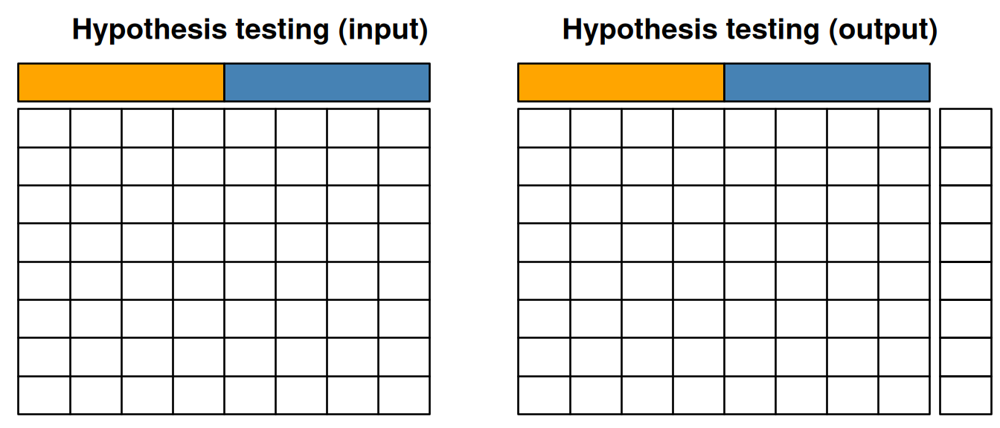

Chapter 12 Conclusions
In this course, we have consolidated our skills in data analysis and visualisation using R. In particular, this course has focused on interpretation and understanding of the outputs.
We have also learned and applied new tools, in particular how to manipulate sequence data using Biostrings and how to use statistical learning tools to explore data and identify patterns of biological interest. In terms of statistical testing and machine learning, it can be useful to summarise the different classes of techniques we have touch on using the figures below. The grid on each of these figures represents a matrix with quantitative values with features (genes, proteins, transcripts, …) along the rows and samples along the columns. Annotations of features or samples are presented as coloured boxes on the right or top if the matrices.
In hypothesis test, we start with quantitative data and an experimental design, i.e. sample annotation that group samples in biologically relevant groups. The output of hypothesis testing is a set of metrics for each features (a p-value, an adjusted p-value, a fold-change, …) that informs whether that feature shows any difference between the biological groups of interest.
Figure 12.1: Hypothesis testing.

When performing clustering (unsupervised machine learning), we only have our quantitative data as input, and the clustering algorithm (whether k-means, hierarchical clustering among many others) suggests a set of groups to cluster the features (as shown below) or samples.
Figure 12.2: Clustering of features.

When performing dimensionality reduction with, for example PCA, one starts with a n by m data set as input to reduce the number of dimensions in either direction. On the figure below, the number of features n was reduced to 2 to, typically, visualise the sample along a scatter plot.
Figure 12.3: Dimensionality reduction.

In classification (supervised machine learning), we need labelled data, i.e. a set of sample (top on the figures below) or features (bottom on the figure below). The classifier uses the data to learn to assign labels and applies that learnt model it infer the most likely label of the unlabelled data.
Figure 12.4: Classification of samples (top) or features (bottom).
The next steps of the curriculum (course WSBIM2122) will build upon the skills gained in this course to fully analyse complete datasets from omics technologies, using state-of-the-art statistical and machine learning methods and software. The course will be project based: each experiment and associated technologies will be introduced, the analysis pipeline will be explained, and the students will then implement and present the data analysis and critical interpretation of the results.
Page built: 2019-12-01